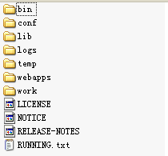

Tomcat配置及学习可以看尚硅谷视频教程
Tomcat是一个开源的Servlet容器
Tomcat的目录层次结构

- bin存放启动和关闭Tomcat的脚本文件
- conf存放Tomcat服务器的各种配置文件
- lib存放Tomcat服务器和所有web应用程序需要访问的jar文件
- logs存放Tomcat的日志文件
- temp存放Tomcat运行时产生的临时文件
- webapps当发布web应用程序时，通常把web应用程序的目录及文件放到这个目录
- work:Tomcat将Jsp生成的Servlet源文件和字节码文件放到这个目录下
运行Tomcat
- 配置java_home或者jre_home
- 打开bin文件夹下的startup.bat文件
- 在浏览器输入localhost:8080，如果看到三脚猫就说明成功
- 若已经启动一个Tomcat应用，这时候再去启动一个Tomcat应用会报错，因为同一个端口号已经被占用了
关闭Tomcat
- 双击bin目录下的shutdown.bat文件即可
配置Tomcat端口号
- 打开conf目录下的server.xml文件
- 修改端口号,找到port=”8080”改为其他的端口号就可以了1<Connector port="8080" protocol="HTTP/1.1" connectionTimeout="20000" redirectPort="8443"/>
Tomcat启动分析
- 执行startup.bat实际上执行的是catalina.bat
- 若想在任意目录下都能启动Tomcat，则需要设置CATALINA_HOME环境变量
- 直接执行 catalina.bat 时需要带上命令行参
- 常用的参数是 start,run 和 stop
Tomcat的管理程序
- Tomcat 提供了一个管理程序：manager,用于部署到 Tomcat 服务器中的 web 应用程序
- 要访问 manager web 应用程序，需要添加具有管理员权限的账号，编辑 conf 目录下的 tomcat-users.xml 文件，添加 manager 角色，设置用户名和密码